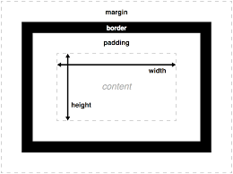

박스
이 부분은
(박스 모델)
에 대해서 공부중인 부분입니다.
잘 헤쳐 나아갈 수 있었으면 좋겠습니다. 이번년도 안에 꼭 취업하고 싶어요.
이런 글을 쓰면서 아무도 못봤으면 좋겠지만 만약에 보는 사람이 생긴다면
꼭 저에게 "고생한다"라는 말을 해주시면 정말로 감사하겠습니다. 그 말이
꼭 듣고 싶거든요,, 요즘 솔직히 너무 힘들어요. 할 일은 많고 조금씩 해나아간다면
해결되리라 생각하고 하고 있지만 계속 쌓이는 일들. 인간관계(이거는 늘 힘들죠 무시한다 한들)
모든걸 내려놓고 없어지고 싶지만 그래도 저를 의지하는 사람들도 있고,
제가 의지하는 사람이 몇몇 있기에 그 의지라는 끈을 놓지 않고 버티고 있어요.
구구절절하게 쓰고 있는데 읽어주셔서 감사합니다. 당신도 힘내시고 끝까지 버텨요. 좋은 날이 언젠가 꼭 있기에 그 날을 기다립시다.